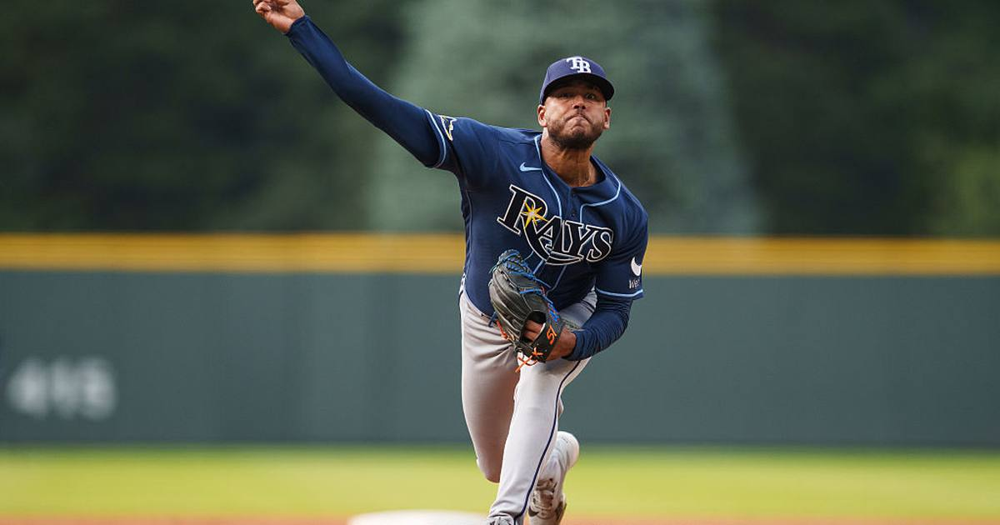

Peralta's six shutout innings even the ALCS at 1-1
Freddy Peralta fired six shutout innings and Liam Hicks drove in two after a José Ramírez error as the Rays beat the Guardians 3-1 to tie the ALCS at one game apiece — Game 3 is Thursday in Cleveland.

Disclosure: this post contains affiliate links. I earn a commission on qualifying purchases.
The Rays evened the ALCS on Tuesday night, riding Freddy Peralta's six shutout innings to a 3-1 win over the Guardians at Tropicana Field. The series is tied at one game apiece heading to Cleveland.
How it happened
The game was scoreless into the fourth, when a José Ramírez error cracked it open:
4th: Ramírez's error lets Victor Mesa Jr. score; Liam Hicks' two-run single follows; 3-0 TB
Final: Rays 3, Guardians 1; Series 1-1
All three Tampa Bay runs were unearned — the Ramírez miscue opened the door, and Hicks' two-run single kicked it wide open.
What it means
Peralta's six shutout frames set the tone, and the Rays' bullpen held the rest of the way. After dropping the opener 7-3, Tampa Bay answered the moment it had to — Game 3 is Thursday in Cleveland, with the series now best-of-five for a pennant.
Source: Reuters — Freddy Peralta, Rays pull even with Guardians in ALCS
Watch
Source: GUARDIANS vs. RAYS: ALCS Full Game 2 Highlights (October 13) | 2026 MLB Postseason (MLB channel). The official MLB full highlights of Game 2 — Peralta's six shutout innings, the error-aided three-run fourth, and the 3-1 final.
Gear up: Rays gear via Fanatics